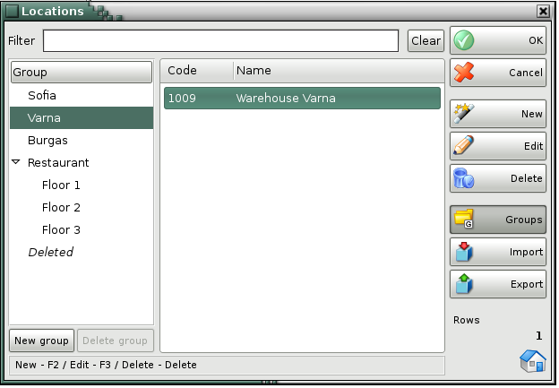

Locations
Use the Locations window to select a location, to add new locations and to edit the locations list. To select a location from the list, click the corresponding row in the table. Click the OK button to confirm. Click Cancel to exit without making the selection.

You can use the New, Edit, Delete buttons to add a new location and to edit or delete an existing one. To edit or delete an existing location you must select it and then confirm the action.
Use Groups button to visualize the structure of locations groups and subgroups.
The Filter option allows you to quickly position on a particular location by typing all or part of its name. To remove specified filter click on the Clear button.
Use Import button to transfer locations from *.csv fail to IncoPOS. Select a file and click OK button. You may choose which columns to import. Then click OK button again and the locations and their parameters will be added to the table. If you wish to import locations groups, then you should enter the groups in the database before the import.
Use Export button to transfer locations from IncoPOS to CSV, Excel 97, Web Page or XML data. Select file's type, enter name and point folder where to save it. Click OK button to realize the export. All locations will be transfered from the currently selected group. If you wish to import all locations from the database click Groups button to hide the groups.
�2006-2015 Microinvest, All rights reserved